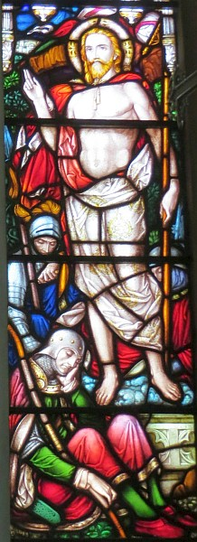

|
Jésû r'vit! tu n'fais d'aut' peux, Mort, tu'as pèrdu tout tan pouvé; Jésû r'vit! et ch'est bein seux qu'la pièrre d'la tombe a 'té boulée. Alléluia! Jésû r'vit! La mort s'sa l'us par tchi j'pâss'sons à la neu vie Jésû r'vit! et n'y'étha pus d'frémeu quand j'y s'sons atchilyis. Alléluia! Jésû r'vit! Pouor nous achteu i' mouothit, not' Saûveux vivant; Jésû r'vit! La glouaithe au tchoeu j'lî r'payons auve la jouaie d'chu chant. Alléluia! Jésû r'vit! j'savons, ma fé, qu'rein n'peut dé s'n amour nos sparti: Jésû r'vit! ch'n'est pon qu'l'enfé nos peut êpeûther: Jésû r'vit! Alléluia! |
 |
Viyiz étout: